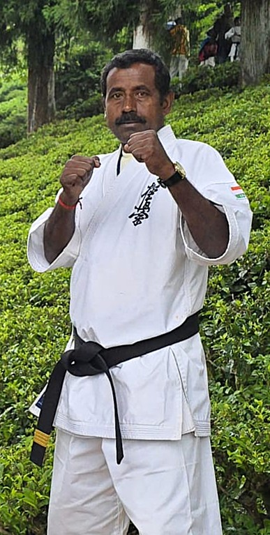

ABOUT THE ORGANIZATION
Our Karate Journey
HISTORY: Masutatsu Oyama Kyokushin Karate Organization was formed in the year 1994, under the leadership of Sensei Satyeswar Mandal.
Sensei Satyeswar Mandal started the organization upon receiving his ShoDAN degree.

OUR SENSEI
Mr. Satyeswar Mandal
4th Dan Black Belt (YonDan)
Sensei Satyeswar Mandal has been the Dojo-in-Charge of the Masutatsu Oyama Kyokushin Karate Organization, Dhapa branch, since 20-Aug-1994.
His journey with Karate started in the year 1987. In 1994, he met the legendary Sosai Mas Oyama, the founder of Kyokushin Karate, at the then Oyama Cup event.
He has mentored and trained over 20 students who presently hold a Black Belt degree.
Sensei has also trained students who went on to win the Asian Championships in the year 2007.
In the year 2024, he appeared for his 4th degree Black Belt exam and was awarded the title of YonDAN following his exam.
He is also the Branch Chief of the Kolkata Branch of IKO Matsushima, Japan.
OUR VALUES
What We Practice
Discipline
Developing consistency and self-control through regular training.
Respect
Respect for instructors, fellow practitioners and the martial arts tradition.
Perseverance
Continuing to train and improve even when challenges arise.
Character
Using martial arts training as a means of personal development.